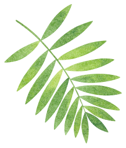
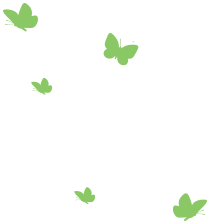
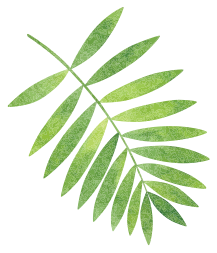
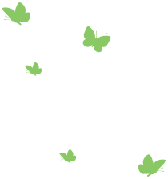
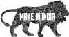

committed
“commitment is what transforms a promise into reality.” – Abraham Lincoln
Commitment is the path of unrelenting pursuit and determination that leads to a better future. We at Hindustan Zinc are committed to optimise the value of our assets, the safety of our people, protect the environment and enhance the progress of our communities & nation. We are committed to organically growing our business and achieve excellence in our operations. We do this by systematically identifying opportunities to improve scale & efficiency, using appropriate technology to do things safer, better & smarter and challenging the status quo. In this endeavour, we are supported by a corporate culture that promotes entrepreneurial spirit, nurtures innovation and values continuous improvement.
In the age of the Fourth Industrial Revolution, climate change and rising income inequality, we stand committed to a holistic approach that secures inclusive growth, raises productivity and preserves scarce natural resources to de-risk our business.
We dedicate our Annual Report to our commitment to build ashared future with our all stakeholders.
 



committed to highest safety standards
We are re-engineering our ‘Aarohan’ safety journey in line with the increasing complexity of our operations. Increasingly, we are deepening our safety engagement with contractors as they are more vulnerable to unsafe acts due to their limited exposure to safety practices. We started conducting sustainability studies at our tailing dams in FY 2018 in consultation with leading global experts to re-assess the structural integrity. In light of the recent high impact failures of tailing dams in Brazil, as a proactive measure, we have decided to build all our future tailing dams as dry tailing to de-risk from dam failures.
Health and safety of our workforce is our highest priority. However, our 5-year track-record of LTIFR reduction was blemished this year with a spate of accidents, each preventable in hindsight. Our transition to underground mining and increase in our projects has necessitated a rethink of our safety practices.
“I commit to devote at least a third of my time to enhance our safety culture and practices.”
- Mr. Sunil Duggal (Chief Safety Officer and CEO)
Our efforts at reducing environmental footprint are leading us to utilise ~two-thirds of our tailings in void management of our underground mines. Enhancing recoveries from slags and residues generated in our smelters is a priority and is achieved by setting up fumer and ancillary plants. We are now trebling our sewage treatment plant capacity to 60 MLD, thereby treating over half of Udaipur city’s sewage and helping in reduction of fresh water usage. Zero liquid discharge in our mines & smelters and setting-up of dry tailing facilities reaffirm our commitment to sustainability
Our efforts at reduction in land footprint, water conservation, renewable energy and waste-to-wealth have won us accolades in ESG*. We are the only mining company from India to be included in the RobecoSAM Sustainability Yearbook 2019 and the winners of CII-ITC Corporate Excellence Award.
We ranked first globally in environment in metals & mining sector in Dow Jones Sustainability Index 2018.
*ESG stands for Environment, Social and Governance

committed to preserve the environment
committed to maximising shareholder value
We commit to invest in exploration and new tenements to maintain mine life of over 25 years and grow our production organically for long-term business sustainability. We will reach 1.2 million tonne per annum of mined metal capacity in this year and are planning for 1.35 million tonne per annum. High IRR mining project investments will preserve and enhance shareholder value - a key priority for us.
In the last 6 years, we doubled our market capitalisation and increased our mined-metal volumes from underground mines by over 500%. We are now positioned as the largest* metal company and among the top 25* overall in India.
Our shareholders earned an average return of 25%** per annum in the last three years.
We are making efforts to enhance usage of zinc considering its low per capita consumption and its impact on the longevity and safety of the nation’s infrastructure; we plan to progressively increase the production of value-added zinc products from current 18% to 50%. Our increasing footprint of renewable energy also contributes to the nation’s power sufficiency. We target to be among Top 5 silver producers in the world in the next three years, putting the country on the world map and reducing imports.
Supporting Government’s ‘Make in India’ initiative, we saved $614 million in foreign exchange through export earnings in FY 2019, while contributing significantly to the country’s import elimination as an integrated domestic producer. Our social initiatives impact over 500,000 lives in the state of Rajasthan supporting employability and livelihood enhancement.
Contributed ₹ 11,563 Crore* (56% of revenue) to Government Treasury in 2018-19.
*through royalties, taxes & dividends
committed to nation building
committed to embrace technology
Sindesar Khurd mine will be fully digitalised in FY 2020 leading to 10%-15% productivity gain driven by digital tracking and real-time dashboards. We are investing in fuming process to recover metals from waste. We have partnered with global experts to implement cutting-edge analytics to track and improve ore to mined metal recoveries. Project ‘Sarathi’ would optimise end-to-end logistic value chain via real-time movement tracking of key input and intermediate materials.
We are in the final phase of creating ‘Mines of the future’ via digitalisation and analytics to drive safer operations and higher productivity. We continue to invest significantly in best-in-class technologies in our beneficiation and smelting process with a goal of progressively improving metal recovery & throughput and optimising resource consumption.
Digitisation, innovation and use of disruptive technologies will take our ore to metal ratio from 81% to 90% in the next three years.
We will continue to focus on core social impact areas with a goal to double the number of lives impacted in the next 3 years. Our skill development programs aim to create ~1000 new job opportunities for the communities’ youth. Through ‘Zinc Football’ initiative, we are identifying and nurturing young talent at the grassroot level with a goal to bring them to the national stage. In a first in mining industry, we have created a framework for making jobs open for Persons with Disabilities and 50+ roles will now open for hiring. We are activating a long term water security strategy for people in our operating areas.
We recognise that our true license to operate is granted by the communities around our operations. In the last two years, our CSR investment has grown 2.6x to ₹ 130 Crore, dedicated towards socioeconomic well-being of people around us.